Comment se construit une règle Opquast ?
Présentation - Comment se construit une règle Opquast ?
Slide 1 sur 16 - Une idée utile suffit-elle ?
Slide 1 - Une idée utile suffit-elle ?
Textes et relations
- Une idée utile suffit-elle ?
- « Ce site doit être intuitif. »
- Trois personnes partagent cette affirmation, mais leurs indices diffèrent.
- Une fiche sans verdict mène à : Intention ≠ règle contrôlable.
- Série : RÈGLES OPQUAST · CONSTRUIRE UNE RÈGLE.
- Pagination : 01 / 16.
Message à retenir
Une impression utile doit devenir une exigence observable avant de pouvoir être examinée comme règle.
De l'intention à la preuve
- Une même attente peut être comprise à partir d'indices différents.
- Le ressenti reste un signal utile pour commencer l'examen.
- Une proposition devient examinable quand elle formule une exigence observable.
- L'examen ne transforme pas automatiquement une idée utile en règle.
Transition
Partons maintenant de la difficulté vécue par une personne.
Slide 2 - Ce que l'utilisateur subit avant la règle
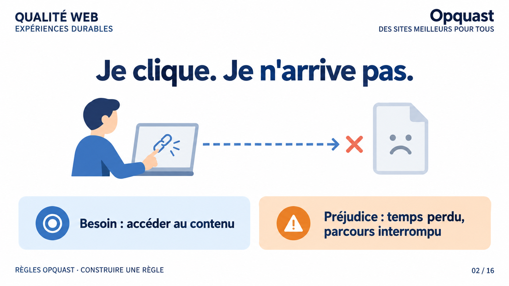
Textes et relations
- Je clique. Je n'arrive pas.
- Une flèche relie le clic à une page introuvable.
- Besoin : accéder au contenu.
- Préjudice : temps perdu, parcours interrompu.
- Série : RÈGLES OPQUAST · CONSTRUIRE UNE RÈGLE.
- Pagination : 02 / 16.
Message à retenir
Nommer le préjudice utilisateur précède la recherche d'une règle ou d'une solution.
Le préjudice avant la solution
- La difficulté vécue est l'impossibilité d'atteindre le contenu attendu.
- Le temps perdu et l'interruption du parcours sont les préjudices explicitement retenus.
- L'abandon reste une éventualité, pas une conséquence certaine.
- Le besoin d'accès au contenu donne le point de départ de l'exigence.
Transition
Une attente large peut pourtant recouvrir plusieurs difficultés distinctes.
Slide 3 - D'une attente large à plusieurs règles possibles
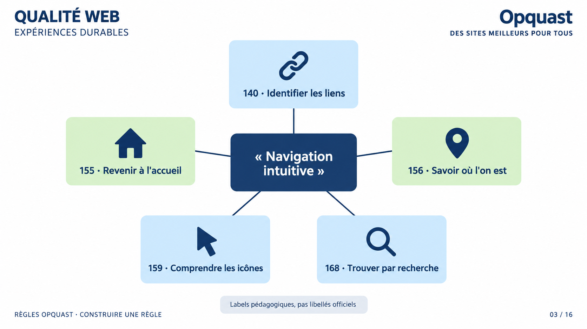
Textes et relations
- « Navigation intuitive » est au centre.
- 140 · Identifier les liens.
- 155 · Revenir à l'accueil.
- 156 · Savoir où l'on est.
- 159 · Comprendre les icônes.
- 168 · Trouver par recherche.
- Les cinq cartes ont le même statut.
- Labels pédagogiques, pas libellés officiels.
- Série : RÈGLES OPQUAST · CONSTRUIRE UNE RÈGLE.
- Pagination : 03 / 16.
Message à retenir
Décomposer une attente permet d'examiner séparément plusieurs expériences utilisateur autonomes.
Décomposer sans prétendre épuiser
- Une appréciation globale peut masquer plusieurs expériences indépendantes.
- Identifier un lien, revenir à l'accueil ou se situer ne posent pas la même question.
- Comprendre une icône et trouver par recherche appellent aussi des contrôles séparés.
- Ces cinq exemples illustrent la décomposition sans épuiser toute la navigation.
Transition
Une idée bien décomposée n'est pas encore nécessairement retenue.
Slide 4 - Proposition, règle et recommandation
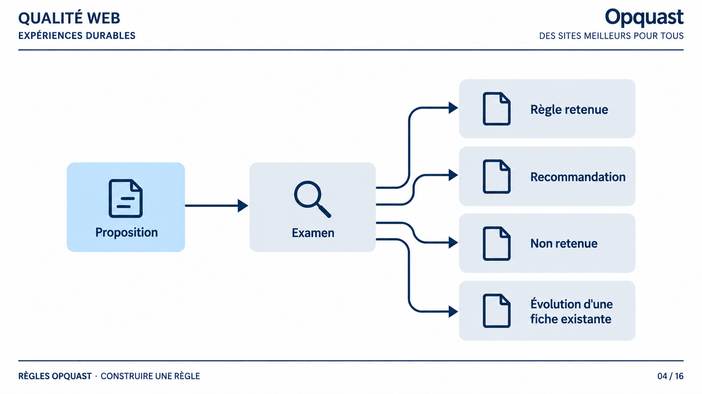
Textes et relations
- Proposition.
- Une flèche conduit à : Examen.
- Quatre sorties non hiérarchisées partent de l'examen.
- Règle retenue.
- Recommandation.
- Non retenue.
- Évolution d'une fiche existante.
- Série : RÈGLES OPQUAST · CONSTRUIRE UNE RÈGLE.
- Pagination : 04 / 16.
Message à retenir
L'examen d'une proposition peut conduire à plusieurs orientations sans réduire la recommandation à un échec.
Plusieurs devenirs utiles
- Une proposition entre dans un examen avant toute décision.
- Elle peut devenir une règle, une recommandation ou ne pas être retenue.
- Elle peut aussi enrichir une fiche déjà présente.
- Une recommandation n'est pas présentée comme une issue dévalorisée.
Transition
La formulation doit ensuite permettre une décision claire.
Slide 5 - Une règle, une décision
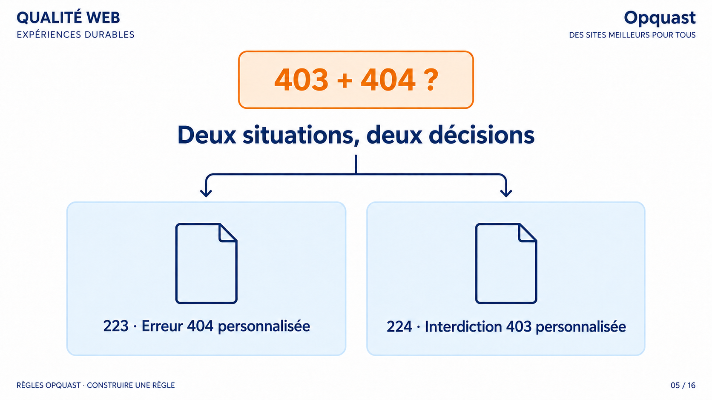
Textes et relations
- 403 + 404 ?
- Deux situations, deux décisions.
- La question se divise en deux fiches.
- 223 · Erreur 404 personnalisée.
- 224 · Interdiction 403 personnalisée.
- Série : RÈGLES OPQUAST · CONSTRUIRE UNE RÈGLE.
- Pagination : 05 / 16.
Message à retenir
Deux risques indépendants doivent être séparés pour conserver un diagnostic unitaire.
Séparer les décisions
- Les erreurs 403 et 404 correspondent à deux situations distinctes.
- Les réunir dans un seul critère brouillerait le diagnostic unitaire.
- L'unicité consiste ici à évaluer une seule exigence à la fois.
- Cette séparation ne signifie pas que toute conjonction serait logiquement indécidable.
Transition
L'unicité rejoint cinq autres exigences utilisées pour éprouver une proposition.
Slide 6 - Six exigences pour éprouver une proposition
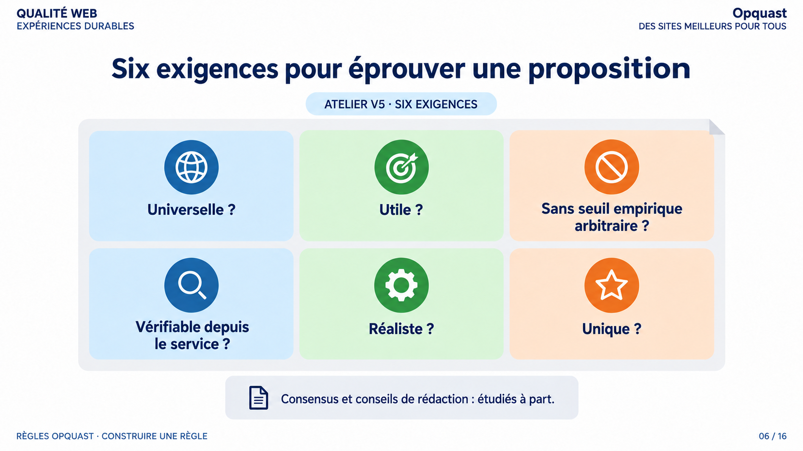
Textes et relations
- Six exigences pour éprouver une proposition.
- ATELIER V5 · SIX EXIGENCES.
- Universelle ?
- Utile ?
- Sans seuil empirique arbitraire ?
- Vérifiable depuis le service ?
- Réaliste ?
- Unique ?
- Les six cartes ont le même statut et ne forment pas une chronologie.
- Consensus et conseils de rédaction : étudiés à part.
- Série : RÈGLES OPQUAST · CONSTRUIRE UNE RÈGLE.
- Pagination : 06 / 16.
Message à retenir
Les six exigences transforment une préférence en questions examinables, sans intégrer le consensus à la liste.
Six questions, pas six étapes
- L'universalité interroge la portée au-delà d'un contexte local.
- L'utilité et le réalisme relient la proposition à un besoin et à sa mise en œuvre.
- La vérifiabilité demande une preuve observable depuis le service.
- L'absence de seuil empirique arbitraire n'interdit pas tout chiffre.
- L'unicité maintient une seule exigence à évaluer.
- Le consensus et les conseils de rédaction restent volontairement séparés.
Transition
Éprouvons maintenant la vérifiabilité sur deux propositions.
Slide 7 - Vote : quelle proposition est vérifiable ?
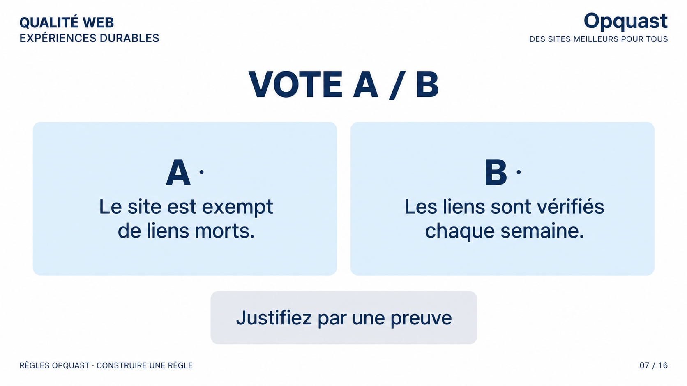
Question et choix
- VOTE A / B.
- A · Le site est exempt de liens morts.
- B · Les liens sont vérifiés chaque semaine.
- Les deux choix ont le même statut visuel et aucun gagnant n'est indiqué.
- Justifiez par une preuve.
- Série : RÈGLES OPQUAST · CONSTRUIRE UNE RÈGLE.
- Pagination : 07 / 16.
Message à retenir
La vérifiabilité distingue un état observable d'une promesse de procédure, sans révéler encore la correction.
Chercher ce qui est observable
- Le choix A décrit un état du service.
- Le choix B décrit une procédure organisée chaque semaine.
- La question porte sur la preuve qui peut être observée depuis le service.
- Aucun verdict n'est donné à ce stade.
Transition
La correction distingue maintenant le résultat contrôlé du moyen de maintenance.
Slide 8 - La preuve, pas la promesse
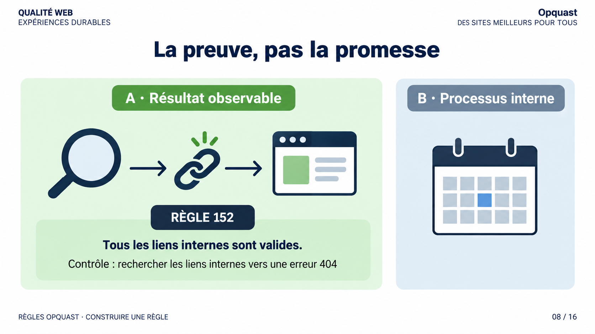
Textes et relations
- La preuve, pas la promesse.
- A · Résultat observable : une loupe suit un lien vers une page valide.
- B · Processus interne : un agenda représente la vérification organisée.
- RÈGLE 152.
- Tous les liens internes sont valides.
- Contrôle : rechercher les liens internes vers une erreur 404.
- Série : RÈGLES OPQUAST · CONSTRUIRE UNE RÈGLE.
- Pagination : 08 / 16.
Message à retenir
Le contrôle constate la validité des liens internes ; une routine hebdomadaire reste un moyen possible, pas la preuve elle-même.
Contrôler un état du service
- La règle porte sur la validité des liens internes.
- Le contrôle recherche les liens internes qui aboutissent à une erreur 404.
- Une vérification hebdomadaire peut être un moyen de maintenance sans devenir la preuve contrôlée.
- La portée reste limitée aux liens internes et ne garantit pas l'absence de toute erreur.
Impact du non-respect
- Un lien interne invalide peut interrompre l'accès au contenu attendu.
Ce que garantit la règle
- La règle contribue à éviter ces impasses sans promettre un parcours absolument sans erreur.
Transition
Une règle vérifiable n'est pas nécessairement applicable à chaque contexte.
Slide 9 - Universelle ne signifie pas toujours applicable
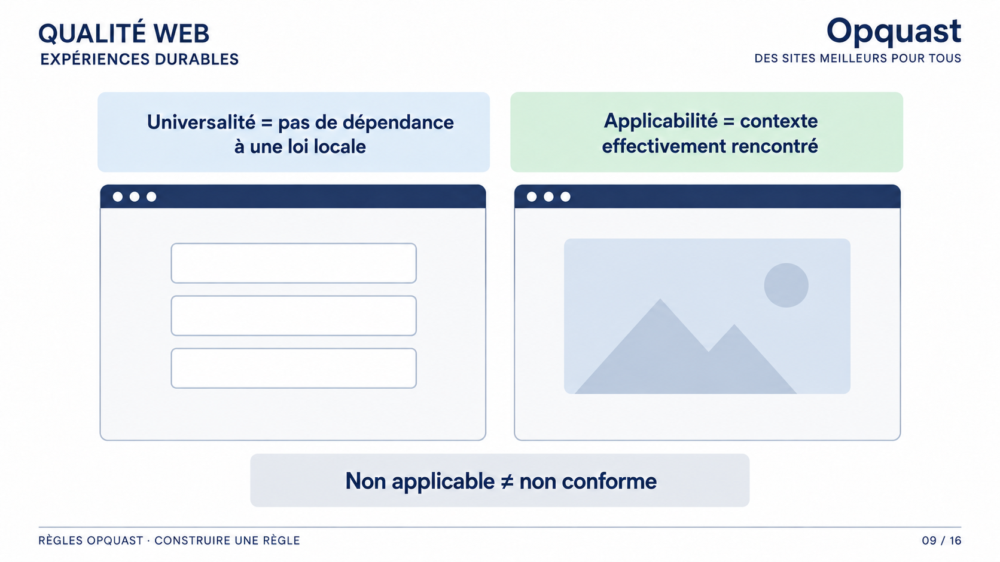
Textes et relations
- Universalité = pas de dépendance à une loi locale.
- Applicabilité = contexte effectivement rencontré.
- Deux sites sont comparés : l'un contient un formulaire, l'autre non.
- Non applicable ≠ non conforme.
- Série : RÈGLES OPQUAST · CONSTRUIRE UNE RÈGLE.
- Pagination : 09 / 16.
Message à retenir
La portée universelle d'une règle et son applicabilité à un service donné doivent être établies séparément.
Portée et contexte de contrôle
- L'universalité exclut une dépendance à une loi locale.
- L'applicabilité dépend de la présence effective de l'objet visé dans le service.
- L'absence de cet objet peut conduire à un statut non applicable.
- Non applicable et non conforme ne désignent pas le même verdict.
- Cette distinction ne crée pas une doctrine automatique pour tous les cas.
Transition
La précision d'une règle doit aussi rester durable et justifiée.
Slide 10 - Écrire durablement, sans mythifier UTF-8
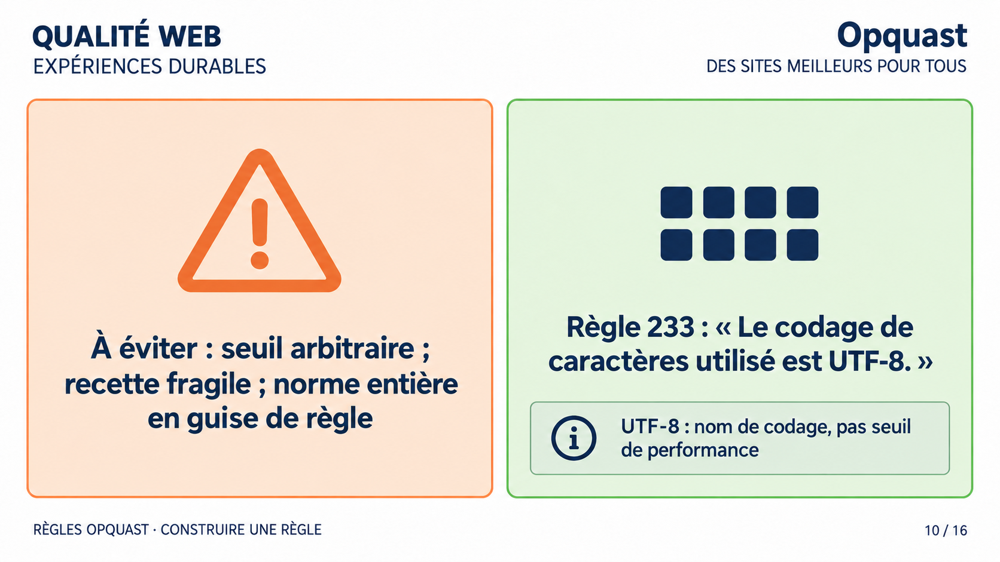
Textes et comparaison
- À éviter : seuil arbitraire ; recette fragile ; norme entière en guise de règle.
- Règle 233 : « Le codage de caractères utilisé est UTF-8. »
- UTF-8 : nom de codage, pas seuil de performance.
- Les deux formulations sont comparées en colonnes.
- Série : RÈGLES OPQUAST · CONSTRUIRE UNE RÈGLE.
- Pagination : 10 / 16.
Message à retenir
La présence d'un chiffre dans un nom technique n'autorise aucun seuil arbitraire et ne rend pas la règle périssable par principe.
Précision justifiée et durée de vie
- Un seuil empirique arbitraire fragilise une règle si sa justification n'est pas établie.
- Une recette ou une norme entière ne doit pas être transformée mécaniquement en règle.
- UTF-8 contient un chiffre parce qu'il nomme un codage documenté.
- Ce nom technique ne constitue pas un seuil de performance.
Impact du non-respect
- Une précision mal comprise peut déformer la portée de l'exigence.
Ce que garantit la règle
- La règle rend le codage UTF-8 contrôlable sans justifier aucun seuil arbitraire.
Transition
Une formulation robuste doit encore être discutée collectivement.
Slide 11 - On ne fabrique pas un commun tout seul
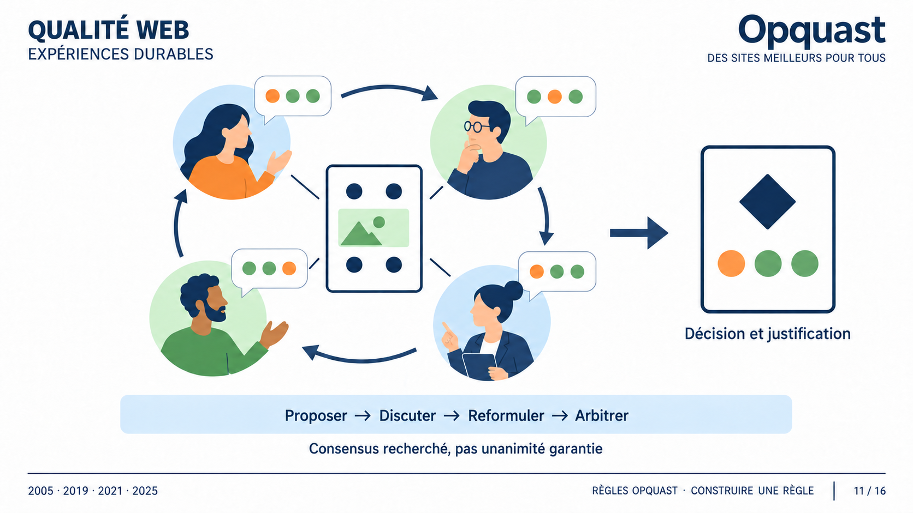
Textes et relations
- Proposer → Discuter → Reformuler → Arbitrer.
- Quatre personnes échangent autour d'une proposition.
- Les arguments sont représentés comme consignés.
- Consensus recherché, pas unanimité garantie.
- Décision et justification.
- 2005 · 2019 · 2021 · 2025.
- Série : RÈGLES OPQUAST · CONSTRUIRE UNE RÈGLE.
- Pagination : 11 / 16.
Message à retenir
La robustesse d'un commun vient d'une discussion argumentée et d'une décision documentée, sans promesse d'unanimité.
Une décision collective et documentée
- Une proposition circule entre plusieurs métiers et peut rencontrer des réponses opposées.
- Les arguments sont discutés puis la formulation peut être reprise.
- L'arbitrage aboutit à une décision qui peut être expliquée.
- Le consensus est recherché sans garantir l'unanimité.
- Cette construction collective traverse plusieurs éditions datées.
Transition
Un débat documenté peut aussi montrer que la meilleure règle existe déjà.
Slide 12 - Parfois, la meilleure règle est déjà là
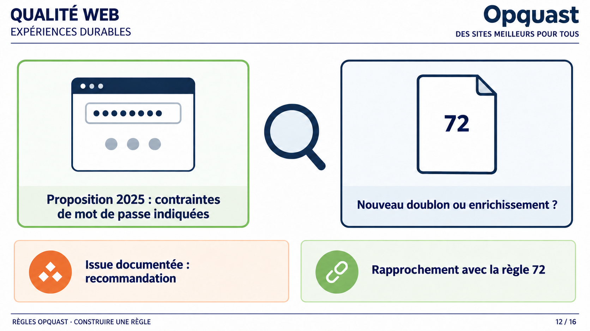
Textes et relations
- Proposition 2025 : contraintes de mot de passe indiquées.
- Une loupe indique la comparaison avec une fiche portant le numéro 72.
- Nouveau doublon ou enrichissement ?
- Issue documentée : recommandation.
- Rapprochement avec la règle 72.
- Aucune flèche causale ne relie la proposition au texte de la règle.
- Série : RÈGLES OPQUAST · CONSTRUIRE UNE RÈGLE.
- Pagination : 12 / 16.
Message à retenir
Examiner le référentiel existant évite le doublon et peut conduire à une recommandation ou à l'enrichissement d'une fiche.
Examiner l'existant avant d'ajouter
- Une proposition discutée en 2025 porte sur l'indication des contraintes de mot de passe.
- L'examen demande si elle crée un doublon ou enrichit une fiche existante.
- Les échanges documentent une recommandation et un rapprochement avec la règle 72.
- Ils ne prouvent pas que cette discussion a créé le texte final de la règle.
- Devenir une recommandation reste une issue utile, pas un échec.
Transition
Quand une règle est retenue, son libellé seul ne suffit pas à l'appliquer.
Slide 13 - Une règle est aussi une fiche de preuves
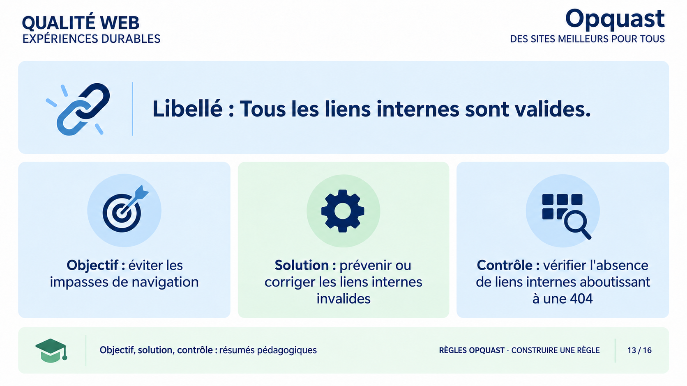
Textes et organisation
- Libellé : Tous les liens internes sont valides.
- Objectif : éviter les impasses de navigation.
- Solution : prévenir ou corriger les liens internes invalides.
- Contrôle : vérifier l'absence de liens internes aboutissant à une 404.
- Objectif, solution, contrôle : résumés pédagogiques.
- Les trois cartes sous le libellé ont le même poids.
- Série : RÈGLES OPQUAST · CONSTRUIRE UNE RÈGLE.
- Pagination : 13 / 16.
Message à retenir
Une fiche exploitable sépare l'exigence, le bénéfice, le moyen et la preuve sans promettre un contrôle entièrement automatisé.
Séparer les fonctions de la fiche
- Le libellé porte l'exigence à respecter.
- L'objectif explicite ici le bénéfice attendu pour la navigation.
- La solution indique une manière de prévenir ou corriger les liens invalides.
- Le contrôle cherche l'absence de liens internes qui aboutissent à une erreur 404.
- Les trois formulations sous le libellé restent des résumés pédagogiques.
- Une fiche exploitable n'implique pas un contrôle entièrement automatisable.
Transition
Une proposition peut maintenant être mise à l'épreuve de ces fonctions.
Slide 14 - Mettez une idée à l'épreuve
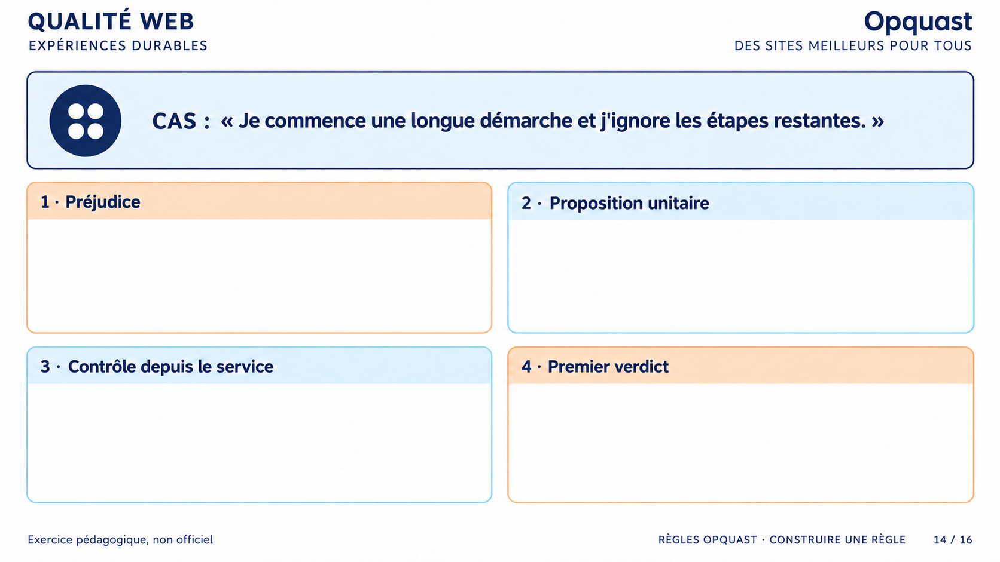
Cas et questions
- CAS : « Je commence une longue démarche et j'ignore les étapes restantes. »
- 1 · Préjudice.
- 2 · Proposition unitaire.
- 3 · Contrôle depuis le service.
- 4 · Premier verdict.
- Les quatre zones de réponse sont vides.
- Exercice pédagogique, non officiel.
- Série : RÈGLES OPQUAST · CONSTRUIRE UNE RÈGLE.
- Pagination : 14 / 16.
Message à retenir
L'exercice oblige à relier un préjudice, une proposition unitaire, une preuve observable et un premier verdict sans produire de règle officielle.
Une proposition confrontée au contrôle
- Le cas décrit une longue démarche dont les étapes restantes sont inconnues.
- Le premier travail consiste à nommer le préjudice utilisateur.
- La proposition doit rester unitaire et formulée pour être discutée.
- Le contrôle doit chercher une preuve observable depuis le service.
- Le premier verdict reste ouvert et aucune correction n'est encore fournie.
- L'exercice produit une proposition discutable, jamais une règle officielle.
Transition
Il reste à vérifier si le besoin est déjà couvert par une règle existante.
Slide 15 - Le bon verdict est parfois : retravailler
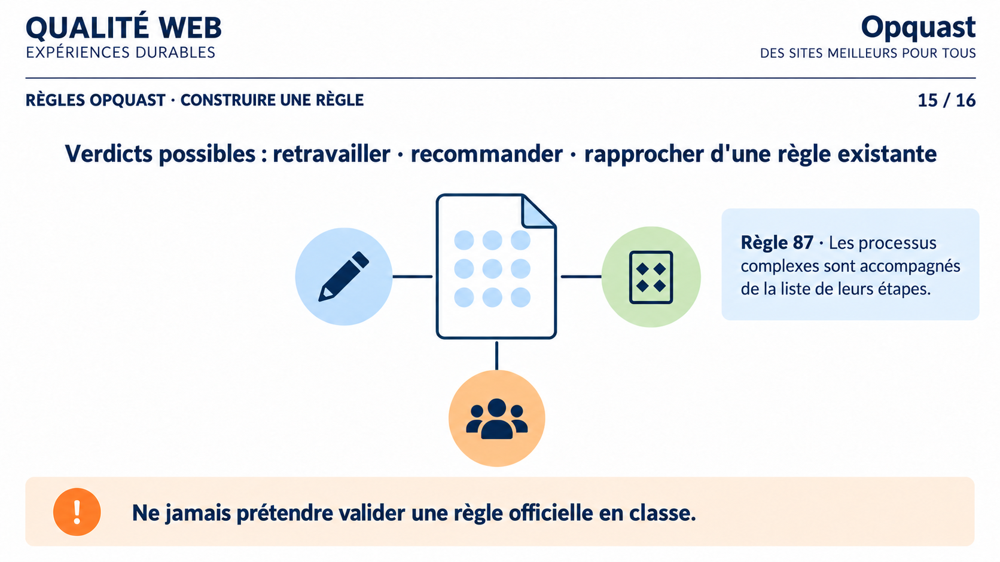
Textes et relations
- Verdicts possibles : retravailler · recommander · rapprocher d'une règle existante.
- Une proposition centrale est reliée à trois sorties de même statut.
- Règle 87 · Les processus complexes sont accompagnés de la liste de leurs étapes.
- La règle 87 est présentée comme référence, pas comme verdict automatique.
- Ne jamais prétendre valider une règle officielle en classe.
- Série : RÈGLES OPQUAST · CONSTRUIRE UNE RÈGLE.
- Pagination : 15 / 16.
Message à retenir
Éviter un doublon et rapprocher une proposition d'une règle existante constitue un résultat utile, sans validation officielle.
Motiver le verdict sans créer de doublon
- La proposition peut être retravaillée, recommandée ou rapprochée d'une règle existante.
- Ces trois issues ne sont pas hiérarchisées à l'avance.
- La règle 87 couvre l'accompagnement des processus complexes par la liste de leurs étapes.
- Le rapprochement évite de produire une nouvelle règle pour un besoin déjà couvert.
Impact du non-respect
- Une nouvelle règle inutile créerait un doublon au lieu de clarifier l'exigence.
Ce que garantit la règle
- La règle existante apporte une référence sans imposer une formulation pédagogique unique.
- L'exercice ne valide aucune règle officielle.
Transition
Reprenons les trois questions qui rendent une proposition partageable.
Slide 16 - Construire une règle, c'est construire une preuve partagée
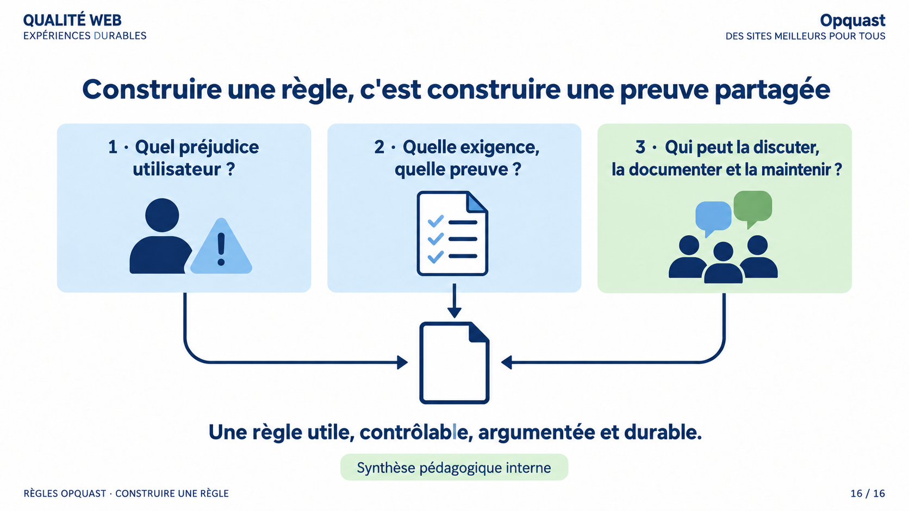
Questions et synthèse
- Construire une règle, c'est construire une preuve partagée.
- 1 · Quel préjudice utilisateur ?
- 2 · Quelle exigence, quelle preuve ?
- 3 · Qui peut la discuter, la documenter et la maintenir ?
- Les trois cartes convergent vers une fiche commune.
- Une règle utile, contrôlable, argumentée et durable.
- Synthèse pédagogique interne.
- Série : RÈGLES OPQUAST · CONSTRUIRE UNE RÈGLE.
- Pagination : 16 / 16.
Message à retenir
Le besoin donne le sens ; la preuve et le débat documenté rendent une proposition utile, contrôlable et maintenable.
Le besoin, la preuve et le débat
- La première question part du préjudice réellement subi par l'utilisateur.
- La deuxième relie une exigence observable à la preuve qui permettra de l'examiner.
- La troisième identifie qui peut discuter, documenter et maintenir la proposition.
- Une preuve partagée est discutée et documentée, sans promettre l'unanimité.
- Cette méthode aide à argumenter sans simuler une validation Opquast.
- Une bonne proposition n'est pas forcément retenue.
Conclusion
Une règle Opquast est une exigence pensée pour être utile, contrôlable, discutée et maintenable.